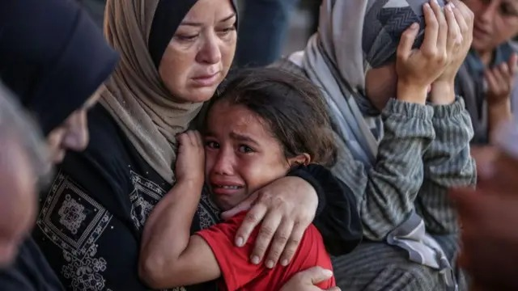
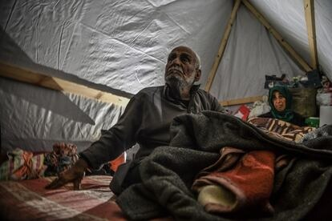
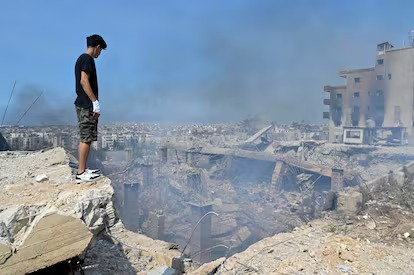
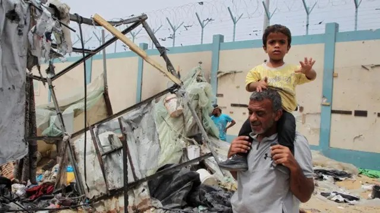
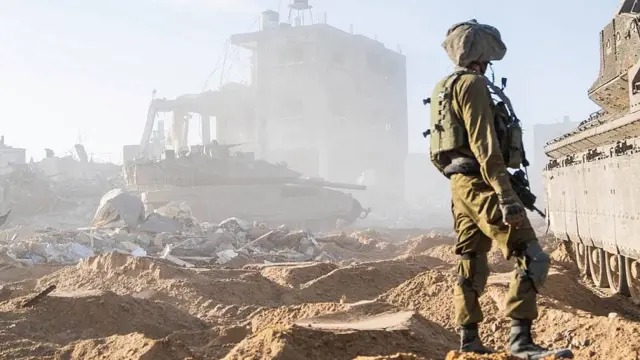
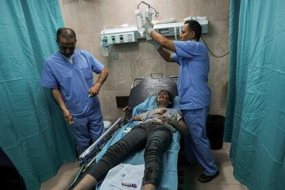

De una Madre: "Cada día me despierto con miedo, y me duermo con miedo. No solo por lo que está pasando, sino por mi familia, por mis hijos. No sé si un día de estos despertaremos bajo los escombros, muertos por las bombas que caen sin descanso. Vivimos en una ruleta macabra: a veces estás arriba, a veces abajo, y nunca sabes cuándo te tocará. Y yo no sé cuánto tiempo más podremos resistir hasta que la ruleta se detenga en nosotros."
 de un Anciano: "He visto guerras antes, pero nunca imaginé una como esta, ni que llegaría a este extremo. He perdido familiares, amigos, y a tantas personas que me acompañaron a lo largo de mi vida. Mi casa ya no existe, mi hogar se convirtió en escombros. Lo único que conservo son los recuerdos: momentos con mi familia, con mis amigos, con los seres que amaba. Pero cada vez que regreso al lugar donde solía estar mi vida, lo único que encuentro es polvo, ruinas y muerte."
De un Joven Estudiante: "Me conectaba a internet para mis clases matutinas, y en cada sesión soñaba con estudiar en el extranjero, conocer nuevas culturas y, algún día, dedicarme a lo que más anhelo. Pero todo eso cambió cuando la electricidad empezó a fallar; ahora solo tenemos unas pocas horas al día. He pasado semanas sin dormir bien, pensando en cuándo terminará todo esto… y si viviré lo suficiente para crecer y alcanzar mis sueños."
 Padre desplazado: "Esto es horrible. No sé cuánto más podremos resistir. Nos movemos de un refugio a otro, sin un lugar estable desde hace semanas. La comida se acaba, el frío es insoportable. Mi familia ha tenido que quemar ropa vieja, incluso fotografías familiares, solo para mantenernos calientes en la noche. Nos invade una enorme incertidumbre: no sabemos si mañana encontraremos un techo… o si terminaremos como tantos otros. A veces siento que ya no puedo más."
De un Soldado: "Dicen que un soldado debe tener la mente fuerte, un pensamiento firme y una misión clara. Un soldado no juzga, no opina, no expresa lo que siente; es como un robot que simplemente hace lo que debe hacer. Pero yo no sé hasta qué punto esto es necesario, o si al final lo que me está definiendo no es la humanidad, sino la sombra de un monstruo. A veces cierro los ojos y me pregunto si algún día todo esto tendrá sentido, o si solo seremos recuerdos de una guerra que nunca debió existir."
 De un Herido: "Todo fue muy rápido. Estaba recolectando recursos para mi grupo cuando, de pronto, todo se volvió blanco. Al abrir los ojos, un pitido zumbante resonaba una y otra vez en mi cabeza. Levanté la mirada y vi mis manos cubiertas de sangre. Todo estaba borroso, me sentía perdido. Creo que me estoy muriendo… y ni siquiera soy capaz de darme cuenta del todo."
Antes de la invasión, Gaza se distinguía por la grandeza de su vida cultural, enraizada en tradiciones transmitidas de generación en generación. Las celebraciones familiares y religiosas se convertían en momentos de encuentro y fraternidad, donde la comunidad se unía en torno a la música, la poesía y la danza, expresiones que preservaban la memoria de un pueblo resiliente. Las artesanías, elaboradas con esmero y dedicación, eran reflejo de la creatividad y del orgullo de conservar una identidad que trascendía el tiempo.
Ahora ya no...
Antes de la invasión, Gaza era un lugar donde la vida cotidiana estaba llena de momentos sencillos pero significativos. Las familias se reunían para compartir comidas tradicionales, los niños jugaban en las calles con alegría y las escuelas eran espacios donde se forjaban sueños de un futuro mejor. En los mercados se respiraban colores, aromas y sabores que reflejaban una cultura vibrante, mientras que la unión comunitaria y la esperanza mantenían vivo el espíritu de quienes habitaban la región.
Ahora ya no...
En aquel tiempo, Gaza se alzaba también como tierra bendecida por su entorno natural, donde el mar Mediterráneo ofrecía horizontes de calma y esperanza. Las familias hallaban en sus playas un lugar de sosiego, compartiendo paseos y contemplando atardeceres que parecían eternos. La agricultura, labor fundamental y digna, nutría tanto la vida económica como el espíritu de la región, siendo símbolo de perseverancia y vínculo con la tierra. Aquella unión con la naturaleza fortalecía la esperanza y reafirmaba la dignidad de su gente.
Ahora ya no...